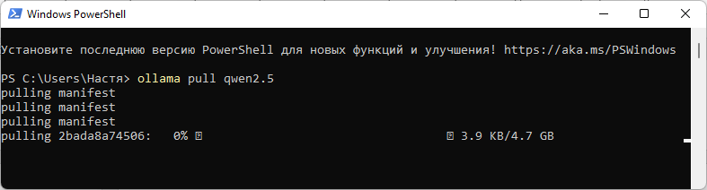
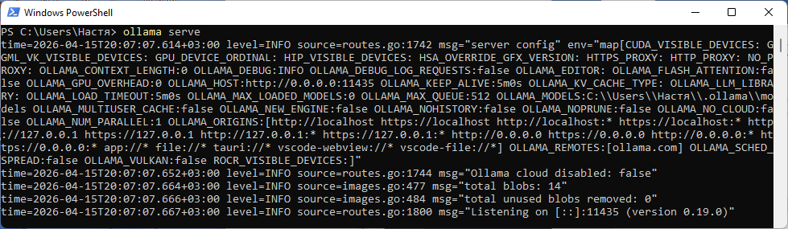
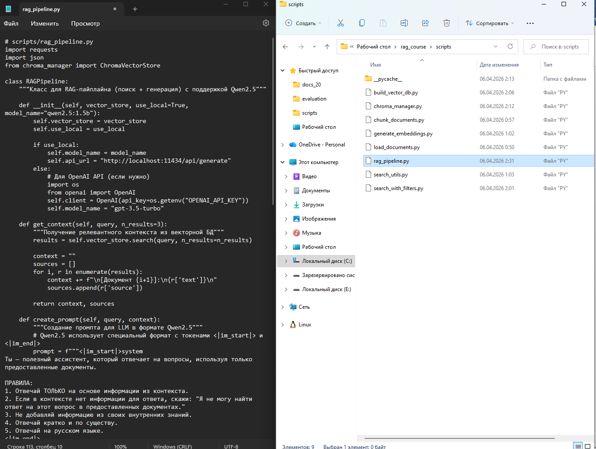
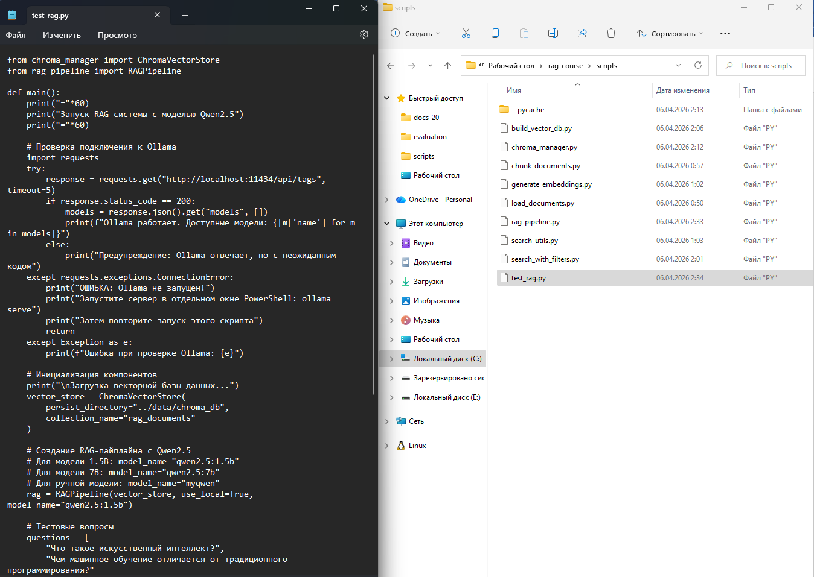
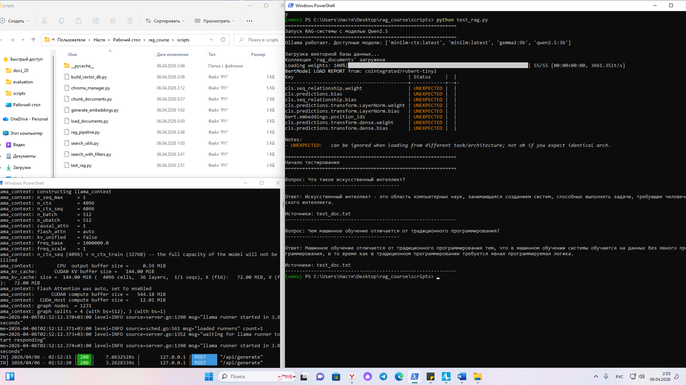

Методическое пособие №4. Интеграция с языковой моделью
Цель занятия
Научиться интегрировать языковую модель (через API OpenAI или локально через Ollama) с поисковой системой для получения ответов на вопросы
Продолжительность: 4 академических часа
Пошаговая инструкция
Теоретическое введение
RAG-пайплайн объединяет два компонента:
- Поиск (Retrieval) - нахождение релевантных фрагментов в векторной БД
- Генерация (Generation) - формирование ответа на основе найденного контекста
Варианты работы с LLM:
- Через API OpenAI - просто, но требует API-ключа и оплаты
- Локально через Ollama - бесплатно, но требует установки Ollama

Вариант А (рекомендуемый): Локальная модель через Ollama
Установите Ollama с официального сайта: https://ollama.com
После установки откройте новое окно PowerShell и выполните:
# Скачивание модели (однократно)
ollama pull qwen2.5
Убедитесь, что сервер Ollama запущен (в отдельном окне PowerShell):
ollama serve
Вариант Б: Если скачивание через PowerShell не идёт (ручная установка)
Откройте браузер и скачайте GGUF-версию Qwen2.5: Qwen2.5-1.5B-Q4_K_M.gguf (~1 ГБ)
Вариант С: OpenAI API
Получите API-ключ на platform.openai.com. Затем создайте файл .env в папке проекта:
OPENAI_API_KEY=ваш_ключ_здесьСоздайте файл scripts/rag_pipeline.py. Импортируйте библиотеки:
# scripts/rag_pipeline.py
import requests
import json
from chroma_manager import ChromaVectorStoreИмпортируются библиотеки для HTTP-запросов, работы с JSON и класс для работы с векторной БД.
class RAGPipeline:
"""Класс для RAG-пайплайна (поиск + генерация) с поддержкой Qwen2.5"""
def __init__(self, vector_store, use_local=True, model_name="qwen2.5:3b"):
self.vector_store = vector_store
self.use_local = use_local
if use_local:
self.model_name = model_name
self.api_url = "http://localhost:11435/api/generate"
else:
import os
from openai import OpenAI
self.client = OpenAI(api_key=os.getenv("OPENAI_API_KEY"))
self.model_name = "gpt-3.5-turbo"Создаётся класс RAGPipeline, в конструкторе инициализируются векторное хранилище, выбор между локальной LLM и OpenAI API, а также URL для Ollama на порту 11435.
def get_context(self, query, n_results=3):
"""Получение релевантного контекста из векторной БД"""
results = self.vector_store.search(query, n_results=n_results)
context = ""
sources = []
for i, r in enumerate(results):
context += f"\n[Документ {i+1}]:\n{r['text']}\n"
sources.append(r['source'])
return context, sourcesВыполняется поиск в векторной БД, результаты форматируются в единый текстовый блок с нумерацией документов, возвращается контекст и список источников.
def create_prompt(self, query, context):
"""Создание промпта для LLM в формате Qwen2.5"""
prompt = f"""<|im_start|>system
Ты - полезный ассистент, который отвечает на вопросы, используя только предоставленные документы.
ПРАВИЛА:
1. Отвечай ТОЛЬКО на основе информации из контекста.
2. Если в контексте нет информации для ответа, скажи: "Я не могу найти ответ на этот вопрос в предоставленных документах."
3. Не добавляй информацию из своих внутренних знаний.
4. Отвечай кратко и по существу.
5. Отвечай на русском языке.
<|im_end|>
<|im_start|>user
КОНТЕКСТ:
{context}
ВОПРОС: {query}
<|im_end|>
<|im_start|>assistant
"""
return promptФормируется промпт в специальном формате Qwen2.5 с системными инструкциями, контекстом и вопросом пользователя, разделёнными токенами <|im_start|> и <|im_end|>.
def generate_local(self, prompt):
"""Генерация ответа через локальную Ollama модель"""
try:
response = requests.post(
self.api_url,
json={
"model": self.model_name,
"prompt": prompt,
"stream": False,
"options": {
"temperature": 0.7,
"top_p": 0.8,
"repeat_penalty": 1.05
}
},
timeout=120
)
if response.status_code == 200:
return response.json()["response"]
else:
return f"Ошибка при обращении к Ollama: {response.status_code} - {response.text}"
except requests.exceptions.Timeout:
return "Ошибка: превышено время ожидания ответа от Ollama"
except requests.exceptions.ConnectionError:
return "Ошибка: не удалось подключиться к Ollama. Убедитесь, что сервер запущен (ollama serve)"Отправляется POST-запрос к локальному серверу Ollama с параметрами генерации (температура, top_p, penalty), обрабатываются возможные ошибки подключения и таймаута.
def generate_openai(self, prompt):
"""Генерация ответа через OpenAI API"""
response = self.client.chat.completions.create(
model=self.model_name,
messages=[{"role": "user", "content": prompt}],
temperature=0.7
)
return response.choices[0].message.contentОтправляется запрос к OpenAI API с заданной температурой, возвращается текст ответа из первого выбранного варианта.
def answer_question(self, query, n_results=3):
"""Полный пайплайн: поиск + генерация"""
# Шаг 1: Поиск контекста
context, sources = self.get_context(query, n_results)
# Шаг 2: Создание промпта
prompt = self.create_prompt(query, context)
# Шаг 3: Генерация ответа
if self.use_local:
answer = self.generate_local(prompt)
else:
answer = self.generate_openai(prompt)
return {
"question": query,
"answer": answer,
"sources": sources,
"context": context
}Объединяет все этапы RAG-пайплайна: поиск контекста, создание промпта, генерацию ответа (локально или через OpenAI) и возвращает результат в виде словаря с вопросом, ответом, источниками и контекстом.

Создайте файл scripts/test_rag.py. Импортируйте модули и определите главную функцию:
from chroma_manager import ChromaVectorStore
from rag_pipeline import RAGPipeline
def main():
print("="*60)
print("Запуск RAG-системы с моделью Qwen2.5")
print("="*60)Импортируются классы для работы с векторной БД и RAG-пайплайном, затем определяется главная функция и выводится заголовок программы.
# Проверка подключения к Ollama
import requests
try:
response = requests.get("http://localhost:11434/api/tags", timeout=5)
if response.status_code == 200:
models = response.json().get("models", [])
print(f"Ollama работает. Доступные модели: {[m['name'] for m in models]}")
else:
print("Предупреждение: Ollama отвечает, но с неожиданным кодом")
except requests.exceptions.ConnectionError:
print("ОШИБКА: Ollama не запущен!")
print("Запустите сервер в отдельном окне PowerShell: ollama serve")
return
except Exception as e:
print(f"Ошибка при проверке Ollama: {e}")Выполняется проверка доступности сервера Ollama через API-запрос. В случае успеха выводятся доступные модели, при ошибке подключения программа завершается с инструкцией по запуску сервера.
# Инициализация компонентов
print("\nЗагрузка векторной базы данных...")
vector_store = ChromaVectorStore(
persist_directory="../data/chroma_db",
collection_name="rag_documents"
)Создаётся экземпляр класса ChromaVectorStore, который подключается к существующей базе данных в папке ../data/chroma_db и использует коллекцию rag_documents.
# Создание RAG-пайплайна с Qwen2.5
# Для модели 1.5B: model_name="qwen2.5:3b"
# Для модели 7B: model_name="qwen2.5:7b"
rag = RAGPipeline(vector_store, use_local=True, model_name="qwen2.5:3b")Инициализируется RAG-пайплайн с локальной моделью Qwen2.5 версии 3b, которая будет использоваться для генерации ответов.
# Тестовые вопросы
questions = [
"Что такое искусственный интеллект?",
"Чем машинное обучение отличается от традиционного программирования?"
]
print("\n" + "="*60)
print("Начало тестирования")
print("="*60)Создаётся список из двух тестовых вопросов на русском языке и выводится заголовок начала тестирования.
for q in questions:
print(f"\nВопрос: {q}")
print("-"*40)
try:
result = rag.answer_question(q)
print(f"\nОтвет: {result['answer']}")
if result['sources']:
print(f"\nИсточники: {', '.join(result['sources'])}")
except Exception as e:
print(f"Ошибка при обработке вопроса: {e}")
print("-"*60)
if __name__ == "__main__":
main()Для каждого вопроса вызывается метод answer_question(), который выполняет поиск контекста и генерацию ответа. Результат выводится вместе с источниками информации. Блок if __name__ == "__main__" обеспечивает запуск главной функции при выполнении скрипта.

Откройте первое окно PowerShell и выполните:
$env:OLLAMA_HOST="127.0.0.1:11435"
ollama serveOLLAMA_HOST - это переменная окружения, которая указывает Ollama, на каком адресе и порту запускать сервер. По умолчанию Ollama использует порт 11434. Если порт уже занят, запускаем на порту 11435.
Затем во втором окне PowerShell:
cd scripts
python test_rag.py
- Настроили Ollama - запустили сервер с моделью Qwen2.5
- Создали RAG-пайплайн - класс, который объединяет поиск и генерацию
- Реализовали промпт для LLM - с инструкцией отвечать только на основе контекста
- Протестировали систему - получили правильные ответы на вопросы
Задание для самостоятельного выполнения
- Добавьте в класс RAGPipeline параметр temperature для управления креативностью ответов.
- Реализуйте сохранение истории диалога (question/answer пары в JSON файл).
- Попробуйте разные модели Ollama (например, llama3.2:1b для скорости или mistral для качества).
- Добавьте в ответ ссылки на источники в формате: [1], [2] прямо в тексте ответа.
Контрольные вопросы
- Из каких двух основных этапов состоит RAG-пайплайн?
- В чём разница между локальной моделью (Ollama) и облачным API (OpenAI)?
- Почему в промпте важно указать "отвечай только на основе контекста"?
- Как передаётся контекст в языковую модель?
- Что произойдёт, если в контексте нет ответа на вопрос?
Критерии оценки
| Критерий | Баллы |
|---|---|
| Успешный запуск локальной модели (Ollama) | 2 |
| Создание RAG-пайплайна (поиск + генерация) | 2 |
| Корректная работа на тестовых вопросах | 2 |
| Обработка случая "ответ не найден" | 2 |
| Выполнено дополнительное задание | 2 |
Максимальный балл: 10